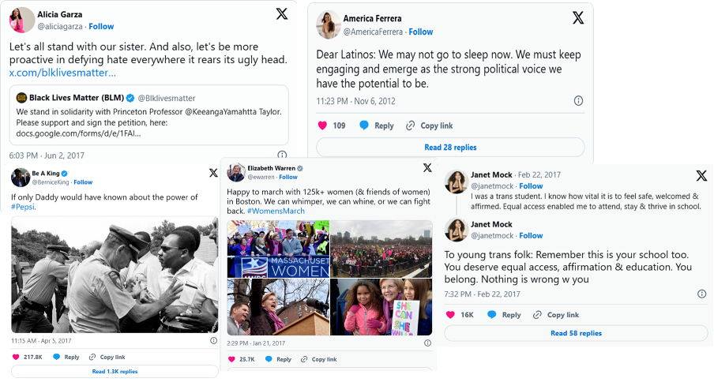
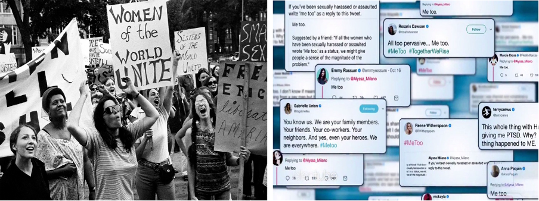

Digital Feminism: Intersectionality and Activism in the Age of Social Media
From Marches to Memes: A New Era of Feminist Activism
In my graduate seminar presentation at the University of Warwick, I explored how social media has transformed feminist activism from localized street protests into globally networked movements. Platforms like X (formerly Twitter), Instagram, and TikTok collapse geographic and socioeconomic barriers, enabling marginalized voices to document abuse, coordinate action, and pressure institutions in real time.
Intersectionality: The Movement’s Engine
Drawing on Kimberlé Crenshaw’s theory of intersectionality, I showed that the most successful digital campaigns foreground overlapping systems of oppression— gender, race, class, sexuality, and disability. Hashtags such as #SayHerName, #BalanceTonPorc, and #YoTambien gained traction precisely because they amplified stories mainstream feminism once overlooked.
Key Takeaways
- Amplification & Access: Digital platforms give historically excluded groups low-cost entry to global audiences.
- Real-time Coalition Building: Activists can synchronize tactics across continents instantly.
- Risks: Echo chambers, performative allyship, and escalating online harassment—especially targeting women of color and LGBTQ+ organizers.
Looking Ahead
As visual storytelling on Instagram and TikTok grows and encrypted apps enable transnational coordination, digital feminism will continue redefining who can speak, be heard, and lead. Sustaining momentum, however, demands pairing viral hashtags with offline organizing and policy advocacy.
← Back to Blog